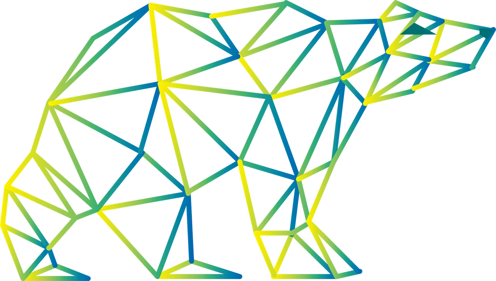
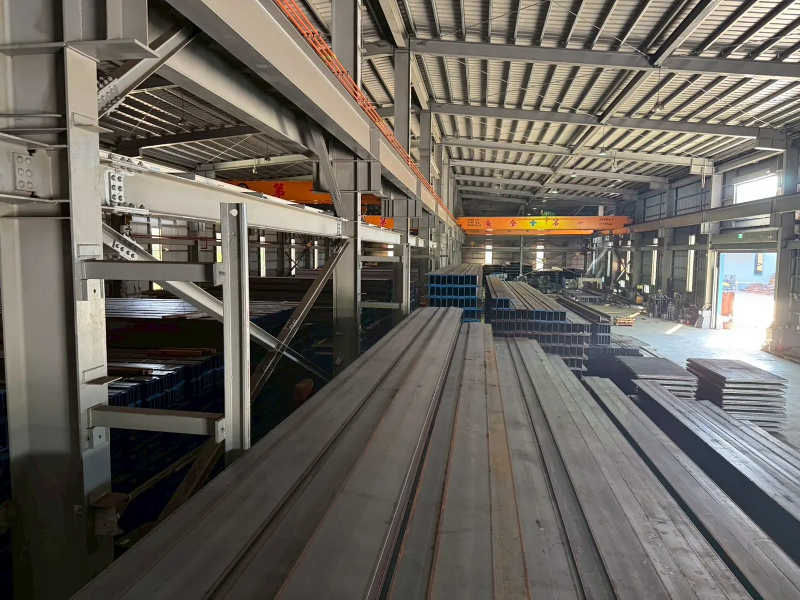

從鋼材專業
到太陽能支架From Steel Expertise
to Solar Mounting
創炘的故事，從鋼鐵產業的日常開始。
創辦人出身於鋼鐵家族，長年接觸各式型鋼、鋪路鋼板與鋼捲，熟悉材料特性，也看見產業需求隨著能源轉型逐漸改變。這份對鋼材的理解，成為創立創炘工業的起點。
創炘成立後，專注投入太陽能支架的設計與製造，將鋼鐵材料的專業延伸至綠能應用。從鎂鋁鋅材料選用、結構規劃到支架製作，團隊持續累積設計經驗，並擁有多項結構設計及相關專利。為掌握原料來源，創炘自行進口原料，並依不同案場需求提供設計與技術協作。
從鋼材到支架，改變的是應用場景，不變的是對材料與設計細節的重視。創炘以「懂鋼更懂你」為初心，期待與您一同成就業主的每份託付。
Invention's story begins in the everyday world of steel.
Our founder grew up in a steel family, working for years with sections, road plates and coils. That hands-on knowledge of materials — and a front-row view of how demand was shifting with the energy transition — became the starting point for Invention.
Since then we have focused on the design and manufacture of solar mounting systems, carrying our steel expertise into renewable energy. From choosing Zn-Al-Mg materials to structural planning and fabrication, our team keeps building design experience and holds multiple structural design patents. We import our own raw materials and provide design and technical support tailored to each site.
From steel to mounting systems, the application has changed; our care for materials and design details has not. Guided by "We know steel, and we know you," we look forward to helping you deliver on every commitment to your clients.

精工設計的三個堅持Three Commitments to Precision
選對鋼材The Right Steel
選用日本 SuperDyma®（鍍層 K35）與韓國浦項 PosMAC®（鍍層 M35）鎂鋁鋅鋼材。切割面會自行生成保護膜，持續防鏽。We use Japanese SuperDyma® (K35 coating) and Korean POSCO PosMAC® (M35 coating) Zn-Al-Mg steel. Cut edges form their own protective layer and keep resisting rust.
為每種屋頂設計Designed for Every Roof
針對 700 型、750 型、730B、430B 等不同浪板，各自開發專屬底座與夾具，並取得多項專利。Dedicated bases and clamps for 700, 750, 730B, 430B and other roof sheets — protected by multiple patents.
用數據驗證Proven by Testing
通過 TÜV 風洞試驗（61.2 m/s）、SGS 拉拔力與 5,000 小時鹽霧試驗。Passed TÜV wind-tunnel (61.2 m/s), SGS pull-out and 5,000-hour salt-spray tests.

懂鋼，
才做得出好支架Know Steel,
Build Better Mounts
除了太陽能支架，我們也供應 H 型鋼、鎂鋁鋅 C 型鋼、鋼板樁、鋼軌與定尺鐵板，並提供鋼捲分條與裁切加工。鋼材本業的進貨管道與加工經驗，讓支架的料源更穩、交期更準。Beyond solar mounts, we supply H-beams, Zn-Al-Mg C-channels, sheet piles, rails and cut-to-size plates, and offer coil slitting and cutting. Our steel supply channels and processing experience mean steadier material supply and more reliable lead times.
鋼材買賣項目Steel Products經營理念Our Values
專案規劃流程Project Workflow
從第一次洽談到完工後的售後服務，一條龍專業支援。One-stop support from the first conversation to after-sales service.
需要專案規劃支援嗎？Need help planning your project?
提供案場地點與屋頂型式，我們安排現場勘查並提供報價。Send us your site location and roof type — we will arrange a survey and quote.